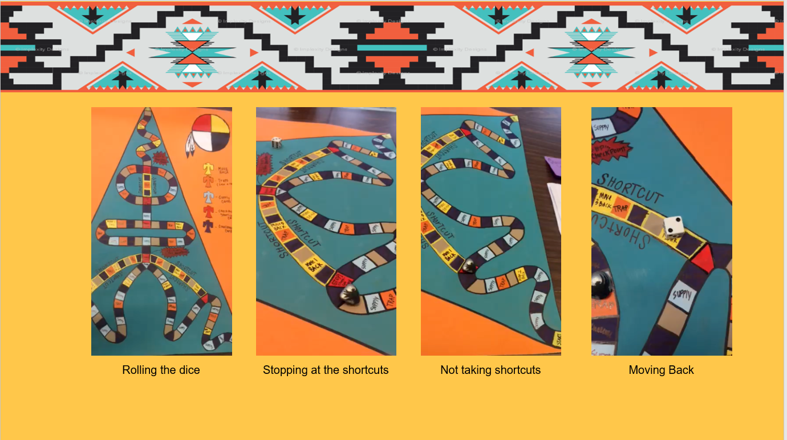
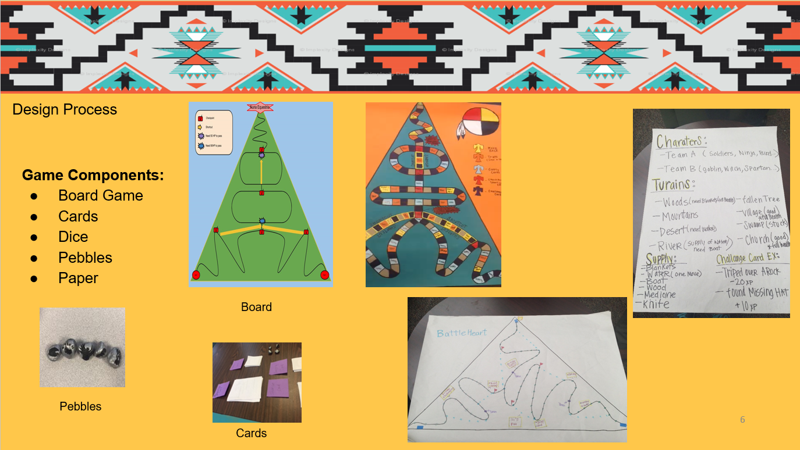

Game Design Project
This is an extremely fun and engaging class project I ever had. I took this technical writing class for the purpose of developing my professional skills in research, design, and communication of technical information. The class was giving a scenario that you were tasked to create a game in a company. Start with choosing and interviewing your team members and creating contract and policies. We have initialized a game with a brainstorm, researching and designing prototype, testing, and redesign. Finally, we came up with a game manual and made a presentation to the audience like a real a game release. It was really challenging that we wrote documents such as memos, proposals, progress and research reports and instruction manuals in a variety of professional report format.
We need to created and presented a board game product within 3 months with game manual, instruction, and prototype. Experience in all aspects of game development through research game mechanics and theory, design storyline, and characters by using Publish, Adobe, set up a strategic goal and target audiences, Testing and iterating 3 levels before the final presentation. Writing technical documents includes memos, proposals, reports and manuals. As a PM of four people team, I managed project scope, plan, schedule, conducted requirements gathering and analysis, project communications, reported progress weekly and prepared collaborative documents for milestones.
What I learned
Even though the workload of the projects leaves me a great impression, the things I learned in this class was countless. I summarized it into two parts.
1. technical Skills
- Writing technical documents includes memos, proposals, reports and manuals.
- Gained knowledge of a product life cycle and SDLC.
- Conduct secondary and primary research and design a research strategy.
- Design visually effective documents and apply the elements of successful visual rhetoric.
2. project management
- Project planning, scope and requirements analysis, resource allocation and monitoring.
- Quality Management and business testing.
- People management, Stakeholder management and project communications.
Here is some pages of the game manual I designed
Native American Storyline and Charaters
All the game elements are inspirited from the Native American culture. Nuna Equestria, the game name, which means battle heart in Native American. In the storyline, the brother named Tyee, means chief, is older and weaker but very gentle and a kind heart. The sister princess named Cli Ara, means beautiful strong, is young and stronger with crucial and greedy. They grew up making their own villages and tribes, and eventually they became enemies. Finally,Who will get to the scroll first and obtain the sacred scroll! with time-a-wasting the two tribes gather their best animal army as representatives for the trek to come. Some meaningful characteristics card like Ptaysanwee: (means white buffalo in Sioux) ; nascha:(means owl in tupi); Chapa: (means beaver sioux ).
The diverse game components
The game components include one game board, a triangular shaped board game in which two teams are traveling on two separate paths to begin with then they will meet on one path, and three kinds of cards. All the Various cards like supply cards, ranging from water, blankets, knives, food, and medicine. The Challenge cards can possible inflict damage of losing health points or gain health points. And each shortcut card has some requirements that you need to have. Such as enough health points and supplies in order to use the shortcut.In addition, you have the chance to draw a shortcut card when you land on the shortcut labeled square or pass through it. If you do not have the requirements, then you cannot take the shortcut path.
Some take aways:
- Understand the audience
How to make effective marketing strategy with the targeting group and understand the client needs while continuously making changes and adjustment to meet their requirements and expectation.
- How to make an effective project plan
We developed team contracts which set up the rules, roles, and responsibility. Defined a scope statement, scope baseline, and schedule to make sure the deliverables. We also keep analyzing project quality and risks and reevaluating if standards, criteria and metrics we used are consistent with our goal and target groups.
- Effective communication
How to better communicate with team members and class audiences. Analyzing rhetorical situations to make decisions about effective communication within and across cultures
Here is some samples of the game presentation
 At the end